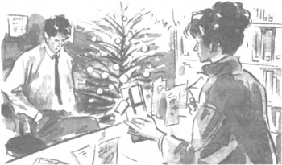

Listen to Part 1:
It began to snow. The snow fell all over Silverton. It fell on the railway and on the college. It fell on Big John’s and on the tower-blocks in Scrapley. It fell on the library and on The Burger Palace across the road.
Tom sat at his desk in the library. People came to him with books. They shook off the snow from their coats onto the newspapers. Children threw snow at the library windows. But Tom said nothing.
Danny came into the library. He waved at Tom but his friend did not wave back. Tom sat at the desk. He stared straight in front of him.
‘Wake up, Tom,’ said Danny. ‘It’s me, Danny.’
Tom looked up. His face was angry and unhappy. He did not smile.
‘Hello, Danny,’ he said at last. ‘What do you want?’
Danny was upset. Tom was his best friend. They had known each other for many years. And now Tom was like a stranger.
‘I haven’t seen you for weeks,’ said Danny. ‘What have you been doing?’
‘Nothing,’ said Tom.
‘Did you find Rita?’ Danny asked.
Listen to Part 2:
‘Yes,’ said Tom. ‘I found her.’
‘And how is she?’
Tom’s face became angry.
‘I don’t know,’ he said. ‘And I don’t care. I don’t ever want to see Rita again.’
Danny was shocked.
‘You don’t mean that, Tom,’ he said.
Tom was very angry now. ‘You don’t know what I mean, Danny,’ he said. ‘You don’t know anything. You’re a fool. Leave me alone!’
———
Soon it was Christmas Eve. Everyone at the library said ‘Happy Christmas’ to Tom. Some people gave him Christmas cards.
Tom hated all the kindness. He did not want to see people smiling and happy. He had been happy with Rita. And now she wasn’t with him any more. He loved her and he hated her at the same time. And then, suddenly, she was there. She was dressed in a new red coat and she stood at the desk in front of him. She looked more beautiful than ever.
Listen to Part 3:
‘Hello, Tom,’ she said quietly. ‘Happy Christmas.’
Tom stared at her. ‘What are you doing here?’ he asked.
‘I spoke to my sister, Shana. You went to my father’s flat, didn’t you?’
Tom said nothing. Rita looked so beautiful! He wanted to kiss her. But he was too angry.
‘I don’t live there any more,’ said Rita.
‘I know you don’t live there any more,’ Tom said angrily. ‘You live with Spooner.’
‘No, I don’t,’ said Rita. ‘I live with my friend, Natalie.’
‘You’re a liar!’ shouted Tom. ‘I saw you in Big John’s with Spooner.’
‘Tom, I work for Spooner. I don’t live with him, you idiot! I’m not his girlfriend.’
‘I don’t care, Rita,’ said Tom. ‘I want you to go away. I don’t want to see you again.’
Listen to Part 4:
‘Tom, please!’ Rita started crying. A tear ran down her face. ‘I need someone to talk to. I’m not happy with my job. All I do is make coffee and clean the office every day. And Spooner won’t leave me alone. He says he wants to marry me.’
‘Why don’t you leave the job then?’
‘I can’t. I need the money. I have to pay the rent for the flat I share with Natalie. And I can’t go back home to my father because I won’t marry Bungo.’
‘The library is closing now,’ said Tom. ‘Please leave.’
Rita held out a small package and an envelope.

‘Happy Christmas,’ she said.
Tom did not take the present or the card. Rita left them on the desk and walked out into the snow.
Tom picked up the package and unwrapped it. Inside was a beautiful watch. Spooner had paid for this! Another one of his tricks! Tom smashed the watch against the desk.
Then he tore the card into pieces and threw it away.
Listen to Part 5:
Inside the torn card there was a short message. It said: ‘I love you.’ The signature was Rita’s.